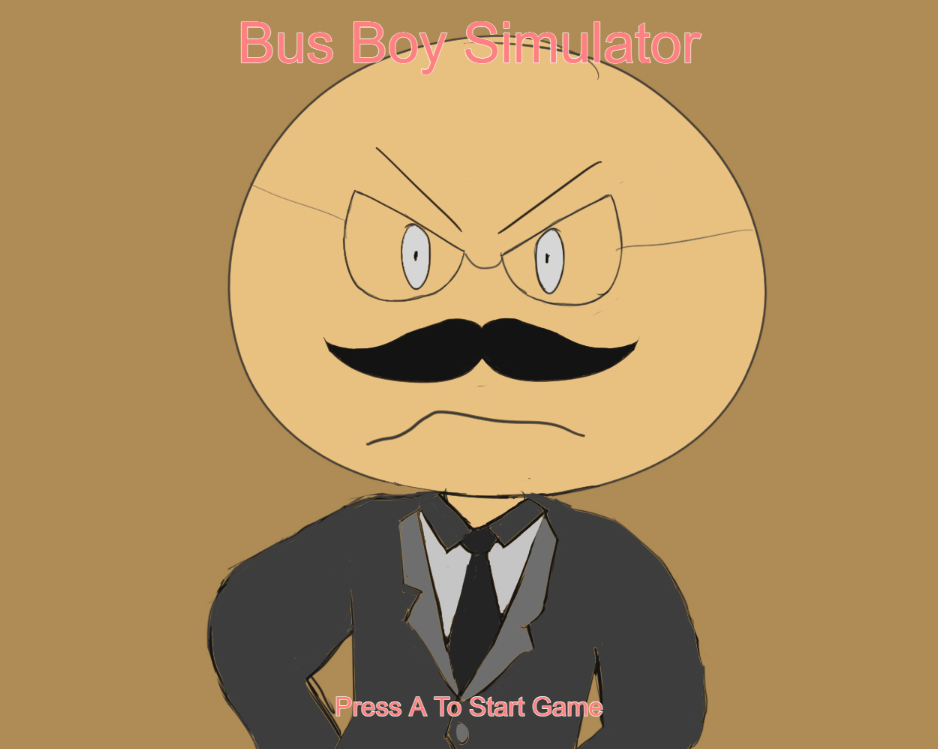

Bus Boy Simulator

CLICK THE SCREENSHOT OF THE WEBSITE! OR link: Game Link
Title: Bus Boy Simulator
Medium: P5js
This project is based on my experience working at a restaurant as a buser. It was made to emulate an buser at a restaurant and what you should and should not do. The goal of the game is to make sure you are making the right choices and not get fired. The reason I chose to make a game about my experience at a restaurant is because it was something I genuinely enjoyed and sometimes when I worked there, I would imagine these scenarios where this or that happens so I thought that I should make a game of that reality instead of actually doing some of these things that could get my boss angry. This game has 5 different endings and each one has unique scenarios that lead up to that point. Hope you enjoy the game..